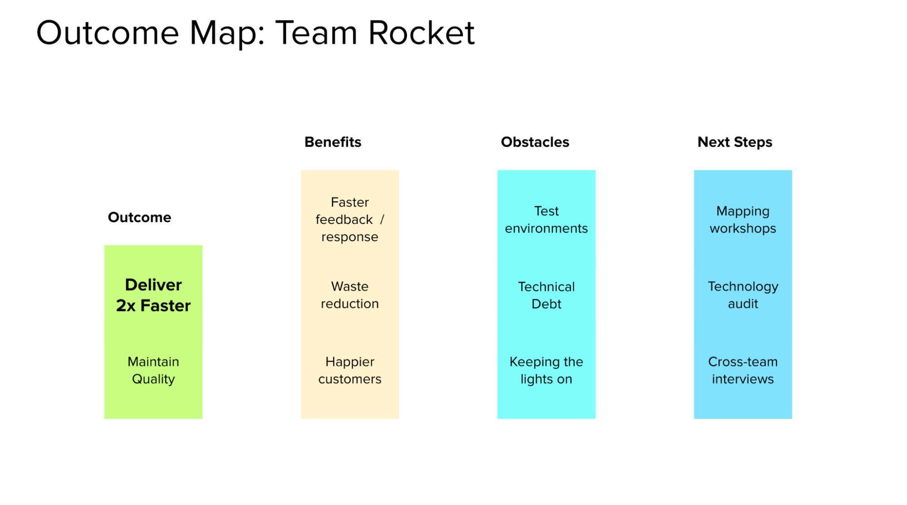
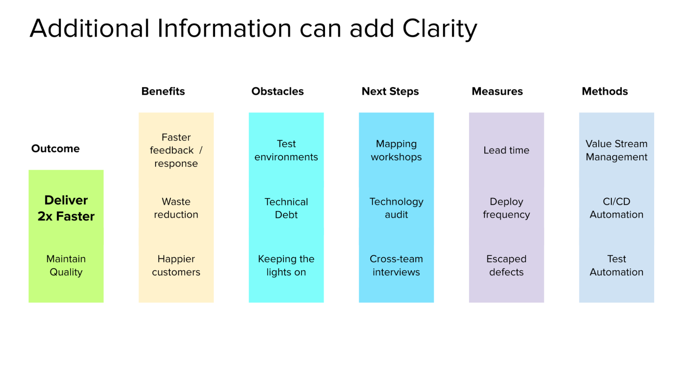

Outcome Mapping (Part of Flow Engineering)
Get a team collaboratively engaged in defining their purpose and path towards achieving a goal (40-50 min)
What is made possible?
Teams often begin an initiative without each member of the team having fully understood the goals, benefits, potential obstacles, or starting point from a common perspective. That clarity can also be lost as time passes. Outcome mapping is a quick and collaborative way for a team to kickoff a new initiative or regain clarity on the primary goal they’re working towards. This exercise involves every member of a shared effort in thinking through a goal and relevant challenges so that they have an equal hand in defining it. As a generated artifact, the outcome map serves as a shared reference enabling individual contributors to remain aligned and on-target as they work together towards the desired outcome.
1. Structuring Invitation
Invite representative stakeholders involved in a common initiative to identify a shared outcome and how to get there. The group maps a path to addressing key questions:
- What is our target Outcome?: The primary goal a group is seeking to achieve in the next 3-6 months.
- What are the Benefits of achieving the outcome?: The value of the target outcome from a variety of stakeholder perspectives, e.g. customers, clients, contributors, organization, community, etc.
- What Obstacles are between us and the outcome?: Constraints and conditions that could hinder progress towards the target outcome.
- What are our Next Steps towards the outcome?: Investigations, experiments, and actions to mitigate obstacles and make progress towards the target outcome.
2. How Space Is Arranged and Materials Needed
- Use a digital whiteboard or an actual whiteboard/paper & sticky notes.
- Create four columns on the whiteboard for Outcome, Benefits, Obstacles and Next Steps.
3. How Participation Is Distributed
- Up to 20 representatives of the key groups involved in a common objective.
- Everyone participates equally.
- Individual participation to generate content and then as a group for discussion, grouping, and voting.
4. How Groups Are Configured
- First alone, then in pairs, then foursomes, then as a whole group (see 1-2-4-All)
5. Sequence of Steps and Time Allocation
- One column at a time (starting with the target Outcome), participants reflect silently to generate ideas for that column (1 min)
- Pairs generate ideas building on ideas from self-reflection (2 min)
- Share and consolidate ideas from your pair in foursomes (look for similarities and differences) (4 min)
- The entire group votes on which items are highest priority in each column and moves those ideas to the top (2 min)
- The top-voted item in the Outcome column becomes the primary outcome. The group repeats this sequence for the next three columns, defining the Benefits of achieving this outcome, and Obstacles and Next Steps to achieving it (30 min)
Why? Purposes
- Individuals have distinct perspectives which are often very different, including perspectives on the ideal target outcome of a group effort.
- Without explicitly distilling and aligning perspectives, odds of success are diminished.
- Crystallize abstract aspects of direction and progress into an actionable reference artifact.
- People thrive when they have autonomy to co-define goals and processes.
- Allow individuals to share their unique perspectives in a structured form.
- Involve all participants in thinking through an initiative.
- Provoke powerful conversations and alignment.
- Translate broad or vague objectives or goals into concise and specific language.
- Provide a safe and constructive way to identify ideas, questions, and challenges in the context of a valuable target outcome.
Tips and Traps
- Avoid allowing a few people to dominate the session.
- If the facilitator is not involved in contributing to the outcome, then they should not contribute ideas to the board.
- Avoid performing the exercise with video off (if remote) to improve engagement.
- Limit the scope of the session to goals and actions within this group’s ability to influence.
- Start with an Outcome Discovery exercise in order to collect sufficient shared context and language to produce high quality material for this session. Invite the group to list ideas, context, questions, or pain points related to a goal.
- As a facilitator, share guidance on creating high-quality target outcomes, such as S.M.A.R.T. (Specific, Measurable, Achievable, Relevant, and Time-Bound).
- If the outcomes relate to process improvement, use Value Stream Mapping to help participants target specific parts of their workflow to improve.
- Implicit in the 3-6 month time horizon for the target outcome is the idea that this effort be repeated as the target objective is achieved, or the landscape and priorities change.
Riffs and Variations
- Expanded maps could include dimensions like measures, ownership & methods.
- In complex scenarios, it may be impossible to predict specific outcomes and may be more beneficial to frame outcomes as increased learning, reduced risk, or increasing options, e.g. place 3 bets to reduce financial exposure to unpredictable market and regulatory conditions. Next steps in complex scenarios may be running experiments, further discussions, or soliciting feedback from a broader population.
- Outcome mapping can be performed repeatedly over the life of an initiative to periodically re-establish clarity.
- If Next Steps aren’t clear, you can use 15% Solutions to break down big challenges into actionable next steps.
- What? So what? Now what? follows a similar structure without explicitly calling out obstacles and challenges.
- To explore benefits further, 9 Whys could help to uncover the deeper purpose behind their goals, creating a clear understanding of the target outcome's importance.
- Ecocycle Planning can be leveraged to map out a number of initiatives and activities, identifying what is necessary to reach the target outcome, and what might be holding them back.
- Critical Uncertainties can help explore and plan for various future scenarios, ensuring that the target outcome remains achievable and relevant.

A Simple Outcome Map

An Expanded Outcome Map
Attribution
Outcome Mapping within Flow Engineering, as described by Steve Pereira and Andrew Davis, builds on similar frameworks such as OKRs, credit to John Doerr, and V2MOMs, credit to Marc Benioff. Outcome mapping as a more robust practice has been in practice in many forms over the past decade, including between 2008-2013 for Integrated Healthcare Network Improvement across 14 networks to decompose a target outcome across a complex adaptive system[1]
See also Value Stream Mapping - Liberating Structure
And https://itrevolution.com/product/flow-engineering
[1] https://www.ncbi.nlm.nih.gov/pmc/articles/PMC3603332/